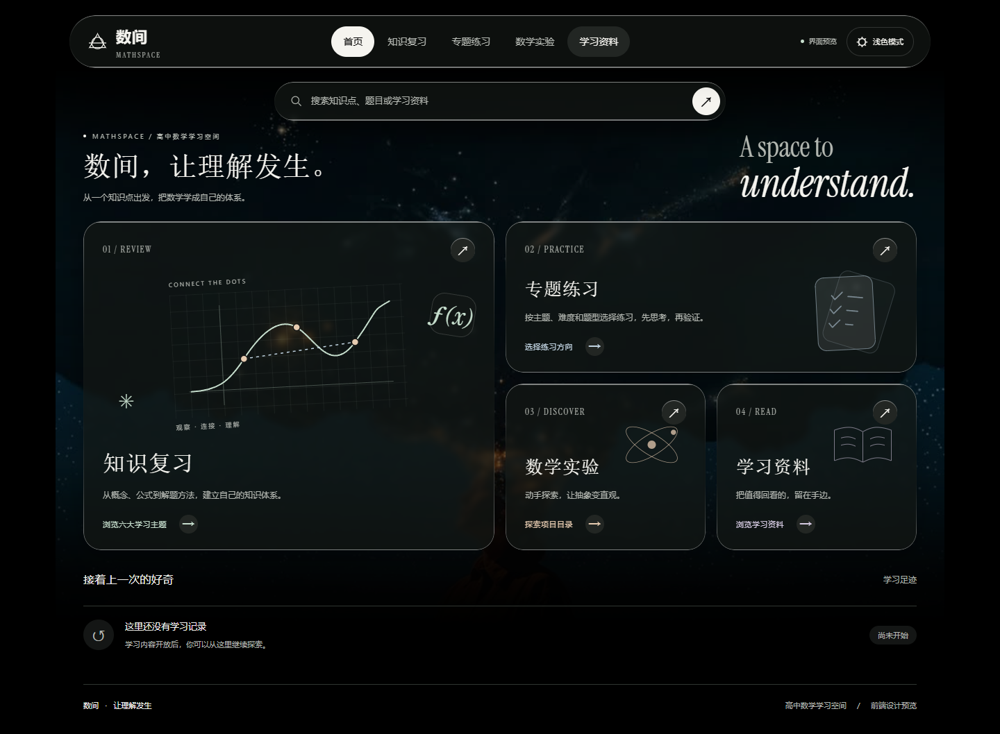
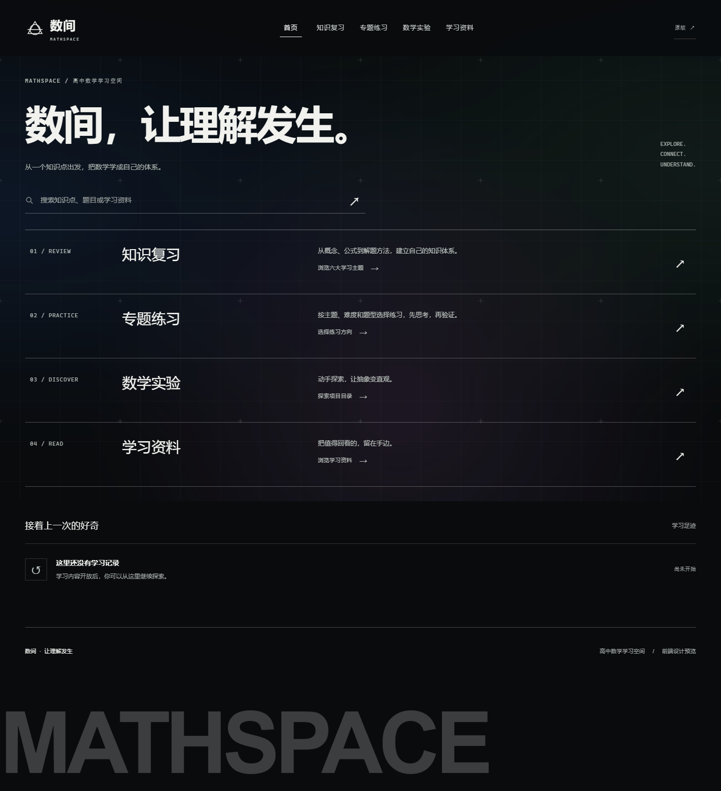

MATHSPACE / TWO PERSPECTIVES
同一个数间，两种界面。
内容相同，换一种观看数学的方式。分别打开，比较真实的学习体验。
VERSION A / ORIGINAL
原版 · 液态玻璃
保留现有界面、配色和全部学习入口。
打开原版 ↗
学习资料 ↗

VERSION B / ALCHE
新版 · 暗色坐标
暗色光雾、坐标网格、大标题与细线列表。
打开新版 ↗
学习资料 ↗
